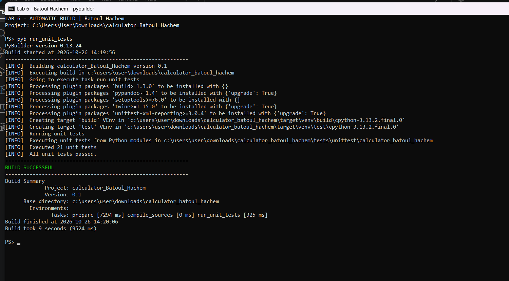
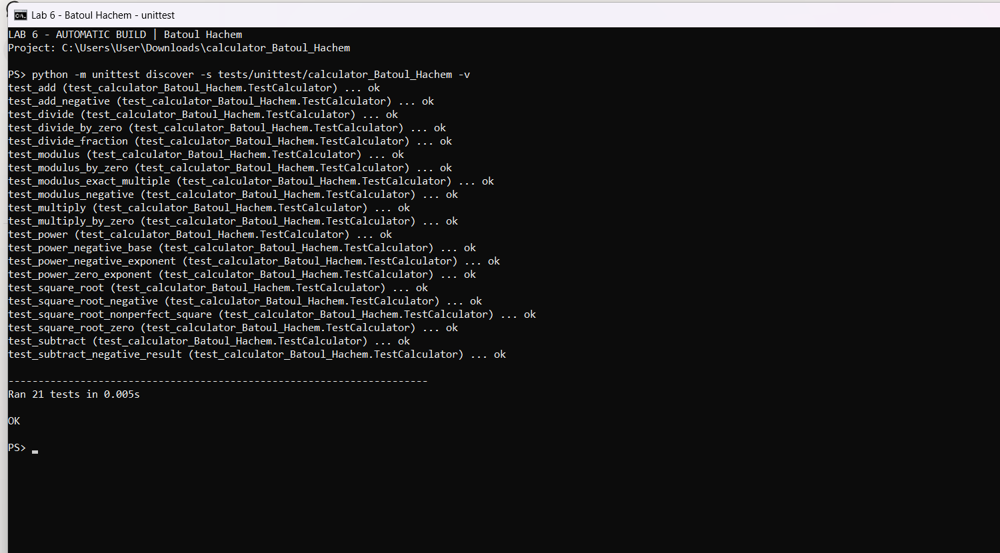
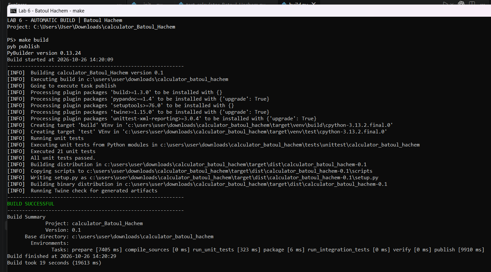
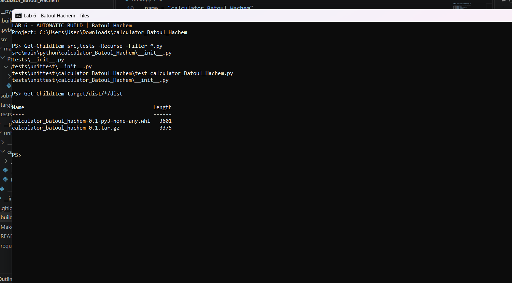

Lab 6 - Automatic Build
Using PyBuilder and a Makefile
- Student
- Batoul Hachem
- Project
- calculator_Batoul_Hachem, version 0.1
- Objective
- Automate calculator testing and packaging with PyBuilder; include the optional Makefile workflow.
- Implementation
- The original add, subtract, multiply and divide functions are extended with modulus(x, y), power(x, y), and square_root(x).
- Error handling
- Division and modulus raise ValueError for a zero divisor. Square root raises ValueError for negative inputs. Modulus follows Python's remainder convention.
- Validation
- 21 unit tests cover normal calculations, negative inputs, zero, fractional results and invalid inputs. Both direct unittest and PyBuilder runs pass.
- Build configuration
- build.py enables python.core, python.unittest, python.install_dependencies, and python.distutils. The default task is publish. The test filename pattern is test_* and the test directory is set explicitly so no tests are missed.
- Makefile
- install/install_deps installs requirements; clean invokes pyb clean; test invokes pyb run_unit_tests; build/package invokes pyb publish. all executes clean, install_deps, test, and build in order. Named targets simplify repeatable tasks and propagate failures.
- Reproduce
- Install requirements.txt, then run pyb run_unit_tests and pyb publish. With GNU Make installed, use make all. See README.md for full commands. The calculator needs only the Python standard library.
- Evidence
- Screenshots show actual Windows PowerShell command runs. Original transcripts accompany the images. No output has been fabricated. The Makefile exercise is optional in the supplied lab.
Required PyBuilder run
The required command, pyb run_unit_tests, discovers and passes 21 tests. The terminal shows BUILD SUCCESSFUL, the named project base directory, Build finished, and the measured elapsed time.

Unit-test results
A separate Python unittest run lists all 21 passing tests, including the three new operations and their error cases.

Optional Makefile build
make build invokes pyb publish: it runs the unit tests and creates the source distribution and wheel. Twine checks the generated package metadata.

Project files and generated packages
The source and test files use the student-specific project name. Both the .tar.gz source archive and .whl package are generated by PyBuilder.
